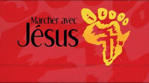

Cette vidéo a été fournie par Jesus Film Project. La publication ou la distribution de ce film, y compris par encadrement ou autres moyens similaires, est interdite sans l'autorisation écrite préalable de Campus pour Christ ou de Jesus Film Project. Le village se réunit pour adorer et connaître Dieu. Le professeur les encourage avec l'histoire de Zachée.